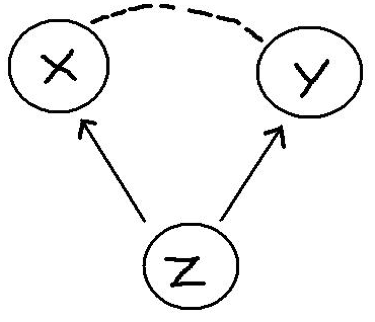
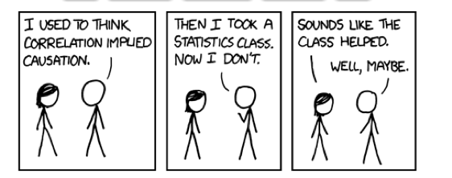

library(tidyverse)7 Randomization and Causality
In this chapter we kick off the third segment of this book: statistical theory. Up until this point, we have focused only on descriptive statistics and exploring the data we have in hand. Very often the data available to us is observational data – data that is collected via a survey in which nothing is manipulated or via a log of data (e.g., scraped from the web). As a result, any relationship we observe is limited to our specific sample of data, and the relationships are considered associational. In this chapter we introduce the idea of making inferences through a discussion of causality and randomization.
Needed Packages
Let’s load all the packages needed for this chapter (this assumes you’ve already installed them). If needed, read Section 1.3 for information on how to install and load R packages.
7.1 Causal Questions
What if we wanted to understand not just if X is associated with Y, but if X causes Y? Examples of causal questions include:
- Does smoking cause cancer?
- Do after school programs improve student test scores?
- Does exercise make people happier?
- Does exposure to abstinence only education lead to lower pregnancy rates?
- Does breastfeeding increase baby IQs?
Importantly, note that while these are all causal questions, they do not all directly use the word cause. Other words that imply causality include:
- Improve
- Increase / decrease
- Lead to
- Make
In general, the tell-tale sign that a question is causal is if the analysis is used to make an argument for changing a procedure, policy, or practice.
7.2 Randomized experiments
The gold standard for understanding causality is the randomized experiment. For the sake of this chapter, we will focus on experiments in which people are randomized to one of two conditions: treatment or control. Note, however, that this is just one scenario; for example, schools, offices, countries, states, households, animals, cars, etc. can all be randomized as well, and can be randomized to more than two conditions.
What do we mean by random? Be careful here, as the word “random” is used colloquially differently than it is statistically. When we use the word random in this context, we mean:
- Every person (or unit) has some chance (i.e., a non-zero probability) of being selected into the treatment or control group.
- The selection is based upon a random process (e.g., names out of a hat, a random number generator, rolls of dice, etc.)
In practice, a randomized experiment involves several steps.
- Half of the sample of people is randomly assigned to the treatment group (T), and the other half is assigned to the control group (C).
- Those in the treatment group receive a treatment (e.g., a drug) and those in the control group receive something else (e.g., business as usual, a placebo).
- Outcomes (Y) in the two groups are observed for all people.
- The effect of the treatment is calculated using a simple regression model, \[\hat{y} = b_0 + b_1T \] where \(T\) equals 1 when the individual is in the treatment group and 0 when they are in the control group. Note that using the notation introduced in Section 5.2.2, this would be the same as writing \(\hat{y} = b_0 + b_1\mathbb{1}_{\mbox{Trt}}(x)\). We will stick with the \(T\) notation for now, because this is more common in randomized experiments in practice.
For this simple regression model, \(b_1 = \bar{y}_T - \bar{y}_C\) is the observed “treatment effect”, where \(\bar{y}_T\) is the average of the outcomes in the treatment group and \(\bar{y}_C\) is the average in the control group. This means that the “treatment effect” is simply the difference between the treatment and control group averages.
7.2.1 Random processes in R
There are several functions in R that mimic random processes. You have already seen one example in Chapters 5 and 6 when we used sample_n to randomly select a specifized number of rows from a dataset. The function rbernoulli() is another example, which allows us to mimic the results of a series of random coin flips. The first argument in the rbernoulli() function, n, specifies the number of trials (in this case, coin flips), and the argument p specifies the probability of “success”” for each trial. In our coin flip example, we can define “success” to be when the coin lands on heads. If we’re using a fair coin then the probability it lands on heads is 50%, so p = 0.5.
Sometimes a random process can give results that don’t look random. For example, even though any given coin flip has a 50% chance of landing on heads, it’s possible to observe many tails in a row, just due to chance. In the example below, 10 coin flips resulted in only 3 heads, and the first 7 flips were tails. Note that TRUE corresponds to the notion of “success”, so here TRUE = heads and FALSE = tails.
coin_flips <- rbernoulli(n = 10, p = 0.5)
coin_flips [1] FALSE FALSE FALSE FALSE FALSE FALSE TRUE FALSE TRUE TRUEImportantly, just because the results don’t look random, does not mean that the results aren’t random. If we were to repeat this random process, we will get a different set of random results.
coin_flips2 <- rbernoulli(n = 10, p = 0.5)
coin_flips2 [1] TRUE TRUE FALSE TRUE FALSE FALSE TRUE FALSE FALSE TRUERandom processes can appear unstable, particularly if they are done only a small number of times (e.g. only 10 coin flips), but if we were to conduct the coin flip procedure thousands of times, we would expect the results to stabilize and see on average 50% heads.
coin_flips3 <- rbernoulli(n = 100000, p = 0.5)
coin_flips3 %>%
as_tibble() %>%
count(value) %>%
mutate(percent = 100 * n/sum(n))# A tibble: 2 × 3
value n percent
<lgl> <int> <dbl>
1 FALSE 49879 49.9
2 TRUE 50121 50.1Often times when running a randomized experiment in practice, you want to ensure that exactly half of your participants end up in the treatment group. In this case, you don’t want to flip a coin for each participant, because just by chance, you could end up with 63% of people in the treatment group, for example. Instead, you can imagine each participant having an ID number, which is then randomly sorted or shuffled. You could then assign the first half of the randomly sorted ID numbers to the treatment group, for example. R has many ways of mimicing this type of random assignment process as well, such as the randomizr package.
7.3 Omitted variables
In a randomized experiment, we showed in Section 7.2 that we can calculate the estimated causal effect (\(b_1\)) of a treatment using a simple regression model.
Why can’t we use the same model to determine causality with observational data? Recall our discussion from Section 5.3.2. We have to be very careful not to make unwarranted causal claims from observational data, because there may be an omitted variable (Z), also known as a confounder:

Here are some examples:
- There is a positive relationship between sales of ice cream (X) from street vendors and crime (Y). Does this mean that eating ice cream causes increased crime? No. The omitted variable is the season and weather (Z). That is, there is a positive relationship between warm weather (Z) and ice cream consumption (X) and between warm weather (Z) and crime (Y).
- Students that play an instrument (X) have higher grades (Y) than those that do not. Does this mean that playing an instrument causes improved academic outcomes? No. Some omitted variables here could be family socio-economic status and student motivation. That is, there is a positive relationship between student motivation (and a family with resources) (Z) and likelihood of playing an instrument (X) and between motivation / resources and student grades (Y).
- Countries that eat a lot of chocolate (X) also win the most Nobel Prizes (Y). Does this mean that higher chocolate consumption leads to more Nobel Prizes? No. The omitted variable here is a country’s wealth (Z). Wealthier countries win more Nobel Prizes and also consume more chocolate.
Examples of associations that are misinterpreted as causal relationships abound. To see more examples, check out this website: https://www.tylervigen.com/spurious-correlations.
7.4 The magic of randomization
If omitted variables / confounders are such a threat to determining causality in observational data, why aren’t they also a threat in randomized experiments?
The answer is simple: randomization. Because people are randomized to treatment and control groups, on average there is no difference between these two groups on any characteristics other than their treatment.
This means that before the treatment is given, on average the two groups (T and C) are equivalent to one another on every observed and unobserved variable. For example, the two groups should be similar in all pre-treatment variables: age, gender, motivation levels, heart disease, math ability, etc. Thus, when the treatment is assigned and implemented, any differences between outcomes can be attributed to the treatment.
7.4.1 Randomization Example
Let’s see the magic of randomization in action. Imagine that we have a promising new curriculum for teaching math to Kindergarteners, and we want to know whether or not the curriculum is effective. Let’s explore how a randomized experiment would help us test this. First, we’ll load in a dataset called ed_data. This data originally came from the Early Childhood Longitudinal Study (ECLS) program but has been adapted for this example. Let’s take a look at the data.
# ed_data <- read_csv("https://docs.google.com/spreadsheets/d/e/2PACX-1vTQ9AvbzZ2DBIRmh5h_NJLpC_b4u8-bwTeeMxwSbGX22eBkKDt7JWMqnuBpAVad6-OXteFcjBY4dGqf/pub?gid=300215043&single=true&output=csv")
glimpse(ed_data)Rows: 335
Columns: 10
$ ID <dbl> 1, 2, 3, 4, 5, 6, 7, 8, 9, 10, 11, 12, 13, 14, 15, 16, 17…
$ FEMALE <dbl> 0, 1, 1, 1, 1, 0, 1, 0, 1, 0, 1, 1, 1, 1, 0, 1, 0, 1, 0, …
$ MINORITY <dbl> 0, 0, 0, 0, 0, 0, 0, 0, 1, 0, 0, 0, 0, 0, 1, 0, 0, 1, 0, …
$ MOM_ED <chr> "Some college", "Vocational/technical program", "Some col…
$ DAD_ED <chr> "Vocational/technical program", "Some college", "Bachelor…
$ SES_CONT <dbl> -0.27, -0.03, 0.48, -0.03, -0.66, 1.53, 0.20, 0.07, -0.32…
$ READ_pre <dbl> 27.4, 32.5, 48.2, 43.9, 36.1, 95.8, 33.8, 33.1, 32.2, 44.…
$ MATH_pre <dbl> 18.7, 30.6, 31.6, 31.4, 24.2, 49.8, 27.1, 27.4, 25.1, 41.…
$ Trt_rand <dbl> 1, 0, 0, 0, 1, 1, 0, 0, 1, 1, 1, 0, 0, 0, 0, 0, 0, 1, 0, …
$ Trt_non_rand <dbl> 1, 1, 0, 1, 1, 0, 1, 1, 1, 0, 0, 1, 0, 0, 0, 1, 0, 1, 0, …It includes information on 335 Kindergarten students: indicator variables for whether they are female or minority students, information on their parents’ highest level of education, a continuous measure of the their socio-economic status (SES), and their reading and math scores. For our purposes, we will assume that these are all pre-treatment variables that are measured on students at the beginning of the year, before we conduct our (hypothetical) randomized experiment. We also have included two variables Trt_rand and Trt_non_rand for demonstration purposes, which we will describe below.
In order to conduct our randomized experiment, we could randomly assign half of the Kindergarteners to the treatment group to recieve the new curriculum, and the other half of the students to the control group to recieve the “business as usual” curriculum. Trt_rand is the result of this random assignment, and is an indicator variable for whether the student is in the treatment group (Trt_rand == 1) or the control group (Trt_rand == 0). By inspecting this variable, we can see that 167 students were assigned to treatment and 168 were assigned to control.
ed_data %>%
count(Trt_rand)# A tibble: 2 × 2
Trt_rand n
<dbl> <int>
1 0 168
2 1 167Remember that because this treatment assignment was random, we don’t expect a student’s treatment status to be correlated with any of their other pre-treatment characteristics. In other words, students in the treatment and control groups should look approximately the same on average. Looking at the means of all the numeric variables by treatment group, we can see that this is true in our example. Note how the summarise_if function is working here; if a variable in the dataset is numeric, then it is summarized by calculating its mean.
ed_data %>%
group_by(Trt_rand) %>%
summarise_if(is.numeric, mean) %>%
select(-c(ID, Trt_non_rand))# A tibble: 2 × 6
Trt_rand FEMALE MINORITY SES_CONT READ_pre MATH_pre
<dbl> <dbl> <dbl> <dbl> <dbl> <dbl>
1 0 0.542 0.327 0.296 46.8 39.0
2 1 0.569 0.293 0.320 48.2 39.9Both the treatment and control groups appear to be approximately the same on average on the observed characteristics of gender, minority status, SES, and pre-treatment reading and math scores. Note that since FEMALE is coded as 0 - 1, the “mean” is simply the proportion of students in the dataset that are female. The same is true for MINORITY.
In our hypothetical randomized experiment, after randomizing students into the treatment and control groups, we would then implement the appropriate (new or business as usual) math curriculum throughout the school year. We would then measure student math scores again at the end of the year, and if we observed that the treatment group was scoring higher (or lower) on average than the control group, we could attribute that difference entirely to the new curriculum. We would not have to worry about other omitted variables being the cause of the difference in test scores, because randomization ensured that the two groups were equivalent on average on all pre-treatment characteristics, both observed and unobserved.
In comparison, in an observational study, the two groups are not equivalent on these pre-treatment variables. In the same example above, let us imagine where instead of being randomly assigned to treatment, instead students with lower SES are assigned to the new specialized curriculum (Trt_non_rand = 1), and those with higher SES are assigned to the business as usual curriculum (Trt_non_rand = 0). The indicator variable Trt_non_rand is the result of this non-random treatment group assignment process.
In this case, the table of comparisons between the two groups looks quite different:
ed_data %>%
group_by(Trt_non_rand) %>%
summarise_if(is.numeric, mean) %>%
select(-c(ID, Trt_rand))# A tibble: 2 × 6
Trt_non_rand FEMALE MINORITY SES_CONT READ_pre MATH_pre
<dbl> <dbl> <dbl> <dbl> <dbl> <dbl>
1 0 0.565 0.226 0.912 51.7 43.6
2 1 0.545 0.395 -0.300 43.3 35.3There are somewhat large differences between the treatment and control group on several pre-treatment variables in addition to SES (e.g. % minority, and reading and math scores). Notice that the two groups still appear to be balanced in terms of gender. This is because gender is in general not associated with SES. However, minority status and test scores are both correlated with SES, so assigning treatment based on SES (instead of via a random process) results in an imbalance on those other pre-treatment variables. Therefore, if we observed differences in test scores at the end of the year, it would be difficult to disambiguate whether the differences were caused by the intervention or due to some of these other pre-treatment differences.
7.4.2 Estimating the treatment effect
Imagine that the truth about this new curriculum is that it raises student math scores by 10 points, on average. We can use R to mimic this process and randomly generate post-test scores that raise the treatment group’s math scores by 10 points on average, but leave the control group math scores largely unchanged. Note that we will never know the true treatment effect in real life - the treatment effect is what we’re trying to estimate; this is for demonstration purposes only.
We use another random process function in R, rnorm() to generate these random post-test scores. Don’t worry about understanding exactly how the code below works, just note that in both the Trt_rand and Trt_non_rand case, we are creating post-treatment math scores that increase a student’s score by 10 points on average, if they received the new curriculum.
ed_data <- ed_data %>%
mutate(MATH_post_trt_rand =
case_when(Trt_rand == 1 ~ MATH_pre + rnorm(1, 10, 2),
Trt_rand == 0 ~ MATH_pre + rnorm(1, 0, 2)),
MATH_post_trt_non_rand =
case_when(Trt_non_rand == 1 ~ MATH_pre + rnorm(1, 10, 2),
Trt_non_rand == 0 ~ MATH_pre + rnorm(1, 0, 2)))By looking at the first 10 rows of this data in Table 7.1, we can convince ourselves that both the MATH_post_trt_rand and MATH_post_trt_non_rand scores reflect this truth that the treatment raises test scores by 10 points, on average. For example, we see that for student 1, they were assigned to the treatment group in both scenarios and their test scores increased from about 18 to about 28. Student 2, however, was only assigned to treatment in the second scenario, and their test scores increased from about 31 to 41, but in the first scenario since they did not receive the treatment, their score stayed at about 31. Remember that here we are showing two hypothetical scenarios that could have occurred for these students - one if they were part of a randomized experiment and one where they were part of an observational study - but in real life, the study would only be conducted one way on the students and not both.
ed_data %>%
select(ID, MATH_pre, Trt_rand,
MATH_post_trt_rand, Trt_non_rand,
MATH_post_trt_non_rand) %>%
filter(ID <= 10)| ID | MATH_pre | Trt_rand | MATH_post_trt_rand | Trt_non_rand | MATH_post_trt_non_rand |
|---|---|---|---|---|---|
| 1 | 18.7 | 1 | 28.4 | 1 | 28.9 |
| 2 | 30.6 | 0 | 31.2 | 1 | 40.8 |
| 3 | 31.6 | 0 | 32.2 | 0 | 31.3 |
| 4 | 31.4 | 0 | 32.0 | 1 | 41.6 |
| 5 | 24.2 | 1 | 34.0 | 1 | 34.4 |
| 6 | 49.8 | 1 | 59.5 | 0 | 49.5 |
| 7 | 27.1 | 0 | 27.7 | 1 | 37.3 |
| 8 | 27.4 | 0 | 27.9 | 1 | 37.5 |
| 9 | 25.1 | 1 | 34.9 | 1 | 35.3 |
| 10 | 41.9 | 1 | 51.6 | 0 | 41.6 |
Let’s examine how students in each group performed on the post-treatment math assessment on average in the first scenario where they were randomly assigned (i.e. using Trt_rand and MATH_post_trt_rand).
ed_data %>%
group_by(Trt_rand) %>%
summarise(post_trt_rand_avg = mean(MATH_post_trt_rand))# A tibble: 2 × 2
Trt_rand post_trt_rand_avg
<dbl> <dbl>
1 0 39.6
2 1 49.6Remember that in a randomized experiment, we calculate the treatment effect by simply taking the difference in the group averages (i.e. \(\bar{y}_T - \bar{y}_C\)), so here our estimated treatment effect is \(49.6 - 39.6 = 10.0\). Recall that we said this could be estimated using the simple linear regression model \(\hat{y} = b_0 + b_1T\). We can fit this model in R to verify that our estimated treatment effect is \(b_1 = 10.0\).
fit <- lm(MATH_post_trt_rand ~ Trt_rand, data = ed_data)
fit
Call:
lm(formula = MATH_post_trt_rand ~ Trt_rand, data = ed_data)
Coefficients:
(Intercept) Trt_rand
39.6 10.0 Let’s also look at the post-treatment test scores by group for the non-randomized experiment case.
ed_data %>%
group_by(Trt_non_rand) %>%
summarise(post_trt_non_rand_avg = mean(MATH_post_trt_non_rand))# A tibble: 2 × 2
Trt_non_rand post_trt_non_rand_avg
<dbl> <dbl>
1 0 43.3
2 1 45.5fit1_non_rand <- lm(MATH_post_trt_non_rand ~ Trt_non_rand, data = ed_data)
summary(fit1_non_rand)$coefficients Estimate Std. Error t value Pr(>|t|)
(Intercept) 43.31 0.871 49.69 4.37e-156
Trt_non_rand 2.18 1.234 1.76 7.89e-02Note that even though the treatment raised student scores by 10 points on average, in the observational case we estimate the treatment effect is much smaller. This is because treatment was confounded with SES and other pre-treatment variables, so we could not obtain an accurate estimate of the treatment effect.
7.5 If you know Z, what about multiple regression?
In the previous sections, we made clear that you cannot calculate the causal effect of a treatment using a simple linear regression model unless you have random assignment. What about a multiple regression model?
The answer here is more complicated. We’ll give you an overview, but note that this is a tiny sliver of an introduction and that there is an entire field of methods devoted to this problem. The field is called causal inference methods and focuses on the conditions under and methods in which you can calculate causal effects in observational studies.
Recall, we said before that in an observational study, the reason you can’t attribute causality between X and Y is because the relationship is confounded by an omitted variable Z. What if we included Z in the model (making it no longer omitted), as in:
\[\hat{y} = b_0 + b_1T + b_2Z\] As we learned in Chapter 6, we can now interpret the coefficient \(b_1\) as the estimated effect of the treatment on outcomes, holding constant (or adjusting for) Z.
Importantly, the relationship between T and Y, adjusting for Z can be similar or different than the relationship between T and Y alone. In advance, you simply cannot know one from the other.
Let’s again look at our model fit1_non_rand that looked at the relationship between treatment and math scores, and compare it to a model that adjusts for the confounding variable SES.
fit1_non_rand <- lm(MATH_post_trt_non_rand ~ Trt_non_rand, data = ed_data)
summary(fit1_non_rand)$coefficients
fit2_non_rand <- lm(MATH_post_trt_non_rand ~ Trt_non_rand + SES_CONT, data = ed_data)
summary(fit2_non_rand)$coefficients Estimate Std. Error t value Pr(>|t|)
(Intercept) 43.31 0.871 49.69 4.37e-156
Trt_non_rand 2.18 1.234 1.76 7.89e-02 Estimate Std. Error t value Pr(>|t|)
(Intercept) 38.22 1.49 25.73 0
Trt_non_rand 8.93 2.02 4.43 0
SES_CONT 5.57 1.34 4.17 0The two models give quite different indications of how effective the treatment is. In the first model, the estimate of the treatment effect is 2.176, but in the second model once we control for SES, the estimate is 8.931. Again, this is because in our non-random assignment scenario, treatment status was confounded with SES.
Importantly, in the randomized experiment case, controlling for confounders using a multiple regression model is not necessary - again, because of the randomization. Let’s look at the same two models using the data from the experimental case (i.e. using Trt_rand and MATH_post_trt_rand).
fit1_rand_exp <- lm(MATH_post_trt_rand ~ Trt_rand, data = ed_data)
summary(fit1_rand_exp)$coefficients Estimate Std. Error t value Pr(>|t|)
(Intercept) 39.6 0.928 42.65 5.46e-137
Trt_rand 10.0 1.314 7.64 2.26e-13fit2_rand_exp <- lm(MATH_post_trt_rand ~ Trt_rand + SES_CONT, data = ed_data)
summary(fit2_rand_exp)$coefficients Estimate Std. Error t value Pr(>|t|)
(Intercept) 37.68 0.883 42.67 7.98e-137
Trt_rand 9.89 1.205 8.21 5.11e-15
SES_CONT 6.37 0.798 7.98 2.37e-14We can see that both models give estimates of the treatment effect that are roughly the same (10.044 and 9.891), regardless of whether or not we control for SES. This is because randomization ensured that the treatment and control group were balanced on all pre-treatment characteristics - including SES, so there is no need to control for them in a multiple regression model.
7.6 What if you don’t know Z?
In the observational case, if you know the process through which people are assigned to or select treatment then the above multiple regression approach can get you pretty close to the causal effect of the treatment on the outcomes. This is what happened in our fit2_non_rand model above where we knew treatment was determined by SES, and so we controlled for it in our model.
But this is rarely the case. In most studies, selection of treatment is not based on a single variable. That is, before treatment occurs, those that will ultimately receive the treatment and those that do not might differ in a myriad of ways. For example, students that play instruments may not only come from families with more resources and have higher motivation, but may also play fewer sports, already be great readers, have a natural proclivity for music, or come from a musical family. As an analyst, it is typically very difficult – if not impossible – to know how and why some people selected a treatment and others did not.
Without randomization, here is the best approach:
- Remember: your goal is to approximate a random experiment. You want the two groups to be similar on any and all variables that are related to uptake of the treatment and the outcome.
- Think about the treatment selection process. Why would people choose to play an instrument (or not)? Attend an after-school program (or not)? Be part of a sorority or fraternity (or not)?
- Look for variables in your data that you can use in a multiple regression to control for these other possible confounders. Pay attention to how your estimate of the treatment impact changes as you add these into your model (often it will decrease).
- State very clearly the assumptions you are making, the variables you have controlled for, and the possible other variables you were unable to control for. Be tentative in your conclusions and make clear their limitations – that this work is suggestive and that future research – a randomized experiment – would be more definitive.
7.7 Conclusion
In this chapter we’ve focused on the role of randomization in our ability to make inferences – here about causation. As you will see in the next few chapters, randomization is also important for making inferences from outcomes observed in a sample to their values in a population. But the importance of randomization goes even deeper than this – one could say that randomization is at the core of inferential statistics.
In situations in which treatment is randomly assigned or a sample is randomly selected from a population, as a result of knowing this mechanism, we are able to imagine and explore alternative realities – what we will call counter-factual thinking (Chapter 9) – and form ways of understanding when “effects” are likely (or unlikely) to be found simply by chance – what we will call proof by stochastic contradiction (Chapter 11).
Finally, we would be remiss to end this chapter without including this XKCD comic, which every statistician loves:

7.8 Exercises
7.8.1 Conceptual
Exercise 7.1 Which of the following are necessary components of a randomized experiment? Select all that apply.
- There is a non-zero probability of being selected into the treatment or control group for every unit
- Every unit of the population is selected into the treatment or control group
- A random process is used for selection
- A random process is used for understanding the results
- A random process is used for administration of the treatments
Exercise 7.2 You are interested in determining how often a 4-sided die (with sides numbered 1-4) rolls the number 2. Which of the following lines of code could you use to simulate 1000 rolls for this experiment?
- 1000*rbernoulli(n = 1, p = 0.25)
- rep( rbernoulli(n = 1, p = 0.25), 1000)
- rbernoulli(n = 0.25, p = 2)
- rbernoulli(n = 1000, p = 0.25)
- rbernoulli(n = 1000, p = 2)
- rbernoulli(n = 1000, p = 1/6)
Exercise 7.3 The more times the random procedure is conducted, the further our experimental probability diverges from the true probability.
- TRUE
- FALSE
Exercise 7.4 Randomization allows you to determine causation because the treatment and control groups do not differ by any pre-treatment variables.
- TRUE
- FALSE
Exercise 7.5 In most real life studies, selection of treatment is not based on a single variable. Which of the following are components of the best approach in this case?
- Try to ensure that treatment and control groups are as similar as possible on all variables related to treatment assignment
- Add additional treatment variables to ensure further randomization
- Look for variables you can use to control for confounding
- State your assumptions and limitations
Exercise 7.6 Consider the following headline: “Students at private colleges have higher GPAs”. What conclusions can you infer?
- private colleges causes higher GPAs, because this would be an observational study
- private colleges are only correlated with higher GPAs, because this would be an observational study
- private colleges causes higher GPAs, because this would be a randomized experiment
- private colleges are only correlated with higher GPAs, because this would be a randomized experiment
Exercise 7.7 Consider the following headline: “Video games cause violent behavior”. What conclusions can you infer?
- video games cause violent behavior, because this would be an observational study
- video games are only correlated with violent behavior, because this would be an observational study
- video games cause violent behavior, because this would be a randomized experiment
- video games are only correlated with violent behavior, because this would be a randomized experiment
Exercise 7.8 Name a potential confounding variable for Exercise 7.6. Name a potential confounding variable for Exercise 7.7.
Exercise 7.9 You are designing an experiment where you provide the eastern half of a city with recommendations to decrease water consumption (treatment group), with the aim of determining the effectiveness of these recommendations. The western half of the city does not receive water consumption recommendations (control group). Would we expect that, on average, the pre-treatment characteristics are the same between the treatment and control groups?
- Yes, because we have no reason to believe that different halves of the city differ
- Yes, because the treatment itself is very mild
- No, because we are not looking at characteristics other than water consumption
- No, because the treatment and control groups were not randomized
Exercise 7.10 A doctor is curious if a new drug he has just learned about is effective in improving symptoms for patients with illness A. To determine the effectiveness of this drug, the doctor randomizes his patients and prescribes half of these patients with the drug of interest, while leaving the other half to continue with existing methods. Simultaneously, however, the physical therapist for all the doctor’s patients is running his own study where he too randomized the doctor’s patients (independently of the doctor’s study) and prescribed half of the patients to a new pain relief therapy program.
In the context of the doctor’s study on the drug, the new pain relief therapy program is what type of variable?
7.8.2 Application
Exercise 7.11 Consider the following scenario:
At a large high school, the administrative personnel want to start an after school program for mathematics help for students. To determine if the program is effective, the administration asks all the math teachers at the school to provide recommendations of which students they believe would benefit from the program, and randomly selects 200 of these students. The trial mathematics program is implemented for the duration of the spring semester, and the administrative personnel consider the outcome to be the change in student’s percentile math score from the fall semester final to the spring semester final.
Based on the setup of this design, can the administrative personnel conclude that the after school program caused students to improve in mathematics? Discuss whether or not randomization was achieved and any limitations of the study.
Exercise 7.12 Consider the following scenario:
You are working for a potato chip company, and are tasked with designing an experiment to determine if potential customers across the US are more receptive to a more complicated graphic on the product compared to the original simple graphic. Due to production and shipping issues, however, the product with the original graphic can only be distributed on the Eastern half of the US and the product with the more complicated graphic can only be distributed on the Western half of the US.
How and why might the confounding variable geography impact your results and conclusions? Can you brainstorm any ways to reduce the impact of this confounding variable?
7.8.3 Advanced
Exercise 7.13 A new study is published claiming that patients are more receptive to rehabilitation of spinal injuries if one wall in the treatment room is painted purple. The hospital you work for is fascinated by the study and wants to implement the study in their own location, but the study provides no empirical evidence of the effectiveness of the treatment.
You are tasked with designing a (randomized) experiment to determine the validity of this claim. Design a study and discuss the limitations of your study.